ProjectNight.com
Wednesday Night Project Night, Page 3
Most recent night first, for this page.
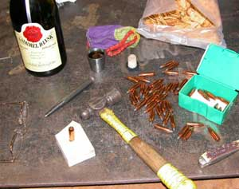
17 October 2007: Tim's shop
Actual projects by every participant. The pen project saw 50, 375 H&H bullet bases, ah, center punched. That's about it for that project. The meat smoker got some siding put on it. That was exhausting. The conversation project went right to the core of the reasoning as to why an honest person cannot possibly vote for a DemocanRepublicrat without changing the dictionary definition of honest. Whew, there was some arm-waving during that. And almost some hammer pounding.
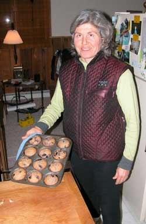
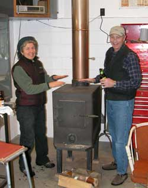
But the real project was the fresh blueberry muffins, start to finish, from scratch, local blueberries. That makes 17 October 2007 one of the most successful Project Nights of history. We have assigned a committee to figure how to get that to happen more often. Currently looking for committee members.
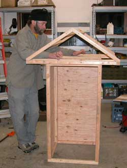
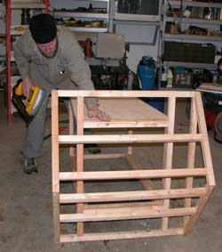
A guest speaker discussed upland game bird hunting in Montana and Washington, with valuable knowledge on which Washington apples to pick while hunting quail. Further, we were informed that it is not wise to forget a bag of apples and frozen quail on the bench at the airport pick-up zone, lest, even after you zip back to get it, you later receive a formal letter from our dear and benevolent federal Homeland Security Gestapo indicating your current status on the terrorist watch list, and threatening you with criminal charges if you forget anything anywhere again. For that, Americans are paying layers upon layers of obscured taxation fees in sum making Americans the most heavily taxed victims of government in the world. Fortunately, the US RepublicratDemocan Regime, a Police State regime, is soon to collapse, on schedule, for the reason every Police State inherently fails, albeit after imprisoning millions and starting more self-defeating wars, much to the amusement of observers. Remember, harmlessly forgetting things is a federal Terrorism Act crime. Don't forget to clean your bathroom clean and take out the gabage.
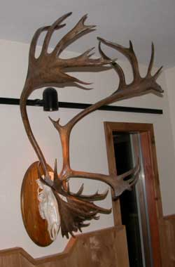
We let the camera guy add the photos of the cool wrought iron plate holder thing, and the caribou.
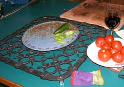
10 October 2007: Matt's shop
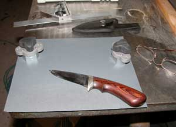
After hunting season (field shop), the knife sharpening project is in order, so the skinning and butchering knives are ready for next season, unlike the camping gear that never quite gets all repaired before it is needed again. Ordinary people get out their sharpening stone, sharpen the knives, and put them away. But ProjectNight people are not ordinary. They open another beer and hand polish their knives down to 2000 grit sandpaper held in place with turn-knob magnets on a machine bed of course. And I mean, another beer, not, a beer. Mirror finish blades.The guy doing the 375 H&H Magnum writing pen project forgot to bring his own center punch, to start the holes in the bottom of the bullets to drill them then melt the lead out of the copper jackets. And Matt's shop center punch was apparently with the camping gear somewhere. So much for that project. If you are waiting for a 375 H&H Magnum writing pen, the project is on schedule. Have patience. Fortunately there was another beer to ease the psychological trauma of a shop without a center punch.
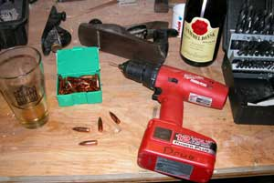
Tim's moose sausage was magnificent, sliced to perfection with a mirror finish blade.Actual projects being completed and ideas discussed were so many that the bottle of Gamel Dansk, sitting in full view, was not uncorked. Next week a double ration will be issued.
The topics of certain other projects cannot be mentioned because the participants are not authorized to be accountable for what they are not getting done, in accordance with current US government standards.
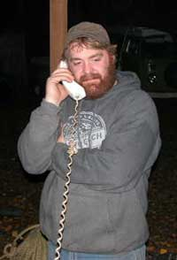
4 October: Duff's shop. As a result of the magnitude of the evening's projects, the Juneau Shop Consultant was consulted by phone link. All specs were verified. The Juneau portion of the project is on schedule. Details are classified or were forgotten.
John Reeves the Fairbanks ice artist who has made the largest and most attention getting ice sculptures in the realm was absent without known excuse while the shop crew worked out proposed specs for the water distribution mechanism for John's proposed winter ice sculpture this winter, if he does not change the rumored design, if the specs work, if all does not go awry. For the proposed design, quite different from the previous towers, the water flow rate in ratio to the pipe length, hole sizes, hole number, insulation and temperature spectrum may be dependent upon dumb luck. Probably will be. Further, it was proposed that Project
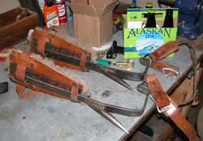
Night meet at John's remarkable Shop on a Project Night of his convenience. Somebody tell John.The tree climbing spur modification project, on the list of things to do since 1965, was delayed again because Duff has been doing everything except acquiring the two most convenient tools needed for that project, which the spurs' owner has also not got around to getting. Duff is still working on getting his newly acquired shop up to his standards, like every other shop owner. The leg shanks of the tree spurs are an inch too long, and really hurt the sides of the bony knees of the guy who made the spurs in 65, every time he uses them and swears he is going to get around to shortening them. The project was rescheduled. A report will be submitted.
A hawk owl nest project was actually started. Some old boards from a scrap pile were cut to width. That was exhausting. The contract for the exterior birch bark siding was submitted for bids.
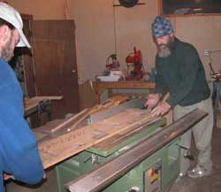
Canned smoked salmon from the Manley Hot Springs crew on the Tanana were savored, with Gamel Dansk, local beer and Juneau beer. Discussion of secret camping spots on Minto Flats, not far from Manley, became detailed. But if you do not know the secret locations, be wary. You could end up on Rotten Slough, which might not contribute to your day. The hazards on the Minto Flats maze are many more than the camping spots. Maybe that is why it is referenced as a mosquito infested swamp,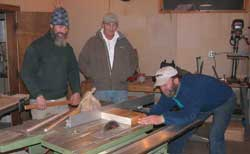
the sort of place that attracts Alaskans, odd lot that they are.The Alaskan Alpine Club John Waterman Science Research Facility proposed location was discussed, albeit as usual. The original proposal stands in favor, but certain locations of scientific interest in Southeast were introduced. That project is only ten years old, maybe twelve, therefore not soon scheduled for completion.
A brief science history lecture by a visiting scientist at Project Night noted the previous generation witnessing the start of the space flight era, from Sputnik I, to the current Mars rovers, which was a rather grand phenomenon of history, but did not revolutionize society, in contrast to a similar phenomenon of the current generation, the start of the computer era, which revolutionized society, and will be hailed as the greatest human advancement since the previous one. The lecturer was applauded and awarded another bottle of Silver
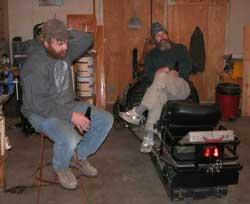
Gulch Old 55 ale.Snow machine trips were discussed. Snow was scheduled.
Next meeting at Matt's Shop, unless we can find John. The scheduled guest lecturer will speak on effective project completion scheduling in relation to project starting.
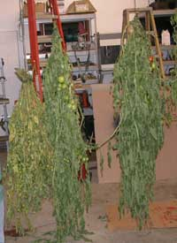
26 September: Tim's Shop. The primary project was moose hunting stories, including several derivations. The moose clucking story from the brush in the draw was a bit much, but he got the moose, so maybe it was true.
The Russians were noticeable in the conversation, as they are becoming in Alaska. A significant Russian community has developed south of Fairbanks, at Delta Junction, among other areas. It is increasing in numbers as more arrive. The new gaggle of Russian emigrants are new to the Alaskan culture. They are still acting like they acted in Russia. Where the Russians go, every animal is quickly killed by any means, and eaten. The Russians strip areas of animals. Where the Russian leave, they leave trash. And they are not timid about either. Primitive lot. They are still on the learning curve, and creating no small amount of related conversation, probably more among the earlier arriving Russian communities who worked to create a respected reputation.
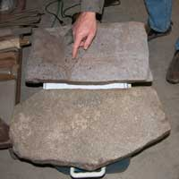
Other topics that came before the prestigious ProjectNight.net central committee included the bountiful local gardens, including green tomatoes, this being harvest time, Ultimate GeoCaching, archeology and various early human artifacts, diamond cutting blades, salmon for drying, herring for pickles and certain highly classified topics.Some moose hunters came back with moose and fossil bones, others came back with moose and flat rocks. A flat rock is a good rock to have.
Pickled herring got a bit involved. Strategies were developed to get the Juneau ProjectNight southern committee to arrange for some high quality herring, none of this bruised bait fish stuff, but known source, carefully handled herring, for certain pickled herring recipes brought over from Old Scandahovian Fjordlands. An Envoy will be sent to south Juneau.
Those are the fossil bones next to the Gamel Dansk, multi colored sack and smoked salmon strips. The salmon was as long as indicated, or maybe that was another project.
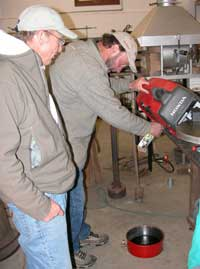
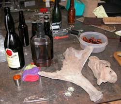
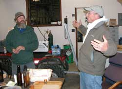
Mid September: Primary projects were being attended to out in the bush, with large caliber rifles and moose butchering knives. One report is on AlaskaStories.com. Another rumored report may have to be transcribed from the next ProjectNight rhetorical diversions from productive effort. Check back after you get your moose in the freezer, or just show up with the story and any sort of project to not do.
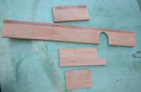
29 August: Matt's shop.
A first ever right here at ProjectNight. The upload happened the same night as ProjectNight. The web slave must have had too much to do, and therefore started with the least important, wisely. Nothing is important.
Actual project worked on. Boards to hide a drain pipe in the AlaskanAlpineClub headquarters laundry room, were sanded. Staggering project production efficiency.
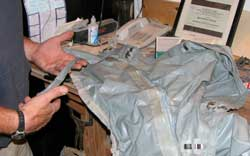
Wait, another actual project was worked on. Klepper kayak spray skirt maintenance. Whew.
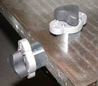
In the, "what is this" category of discussion, the on-off switched super magnet holders were introduced, and played with a lot. Magic. Turn the handle to, off, and there is no magnet. Turn it to, on, and do not let a finger get between the magnet and any steel. When put in a jig, they can hold a fence for any angle of cut on a table mounted cutting device, or used to just play with.
The strength of the magnetism increased inversely proportional to the volume of Lagavulin 16 year old Scotch in the bottle.
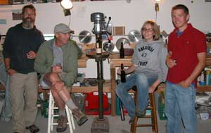
That is the Scotch on the drill press, where it was handy.
Lacey just got back from a summer job in London. Her report about inner London work, living and food was most intriguing. Somehow the conversation ended up in Montana, where it seems Lacy was raised near Pburg, and knows the Pburg crowd.
Let me tell you about the Pburg Montana sorts. Do not tell them that this website has blown their cover. They are one of the few last living remnants found in a single geographical location, who by chance learned enough of the dictionary meanings of plain English language words to be able to read and recognize the laws written in the US Constitution. The phenomenon is becoming more rare each day as the federal government-controlled State governments find and fire the remaining public school English teachers who still teach the dictionary meanings of English words, rather than the government meanings wherein peace is achieved by war, the exercise of rights requires government permission, more taxation creates a prosperous society, the words in laws mean what government says they mean, and the government is here to help you. The proof is manifest by the obvious results of the government's new crop of public school teachers, despite their futile defenses laced with words verifiably contradicting their meanings. Alas, the Pburg sorts are having so much fun, like their ilk in Alaska, and working on so many projects, that they have not yet got around to overthrowing the repugnant DemocanRepublicrat Regime in Washington DC. If the Pburg sorts keep lollygagging around and partying, this webslave will have to overthrow the government hisself, for idle amusement if nothing else, if he does not keep lollygagging around and partying. No problem. If we do nothing, the malicious mental midgets in Washington DC, with their police/military minions and voting supporters of the same intellectual absence, will collapse their empire on schedule, soon enough, much to the howling laughter of the observers. The fall of the Roman, Soviet, US and every other empire happened on schedule for the same reasons so glaring in the US RepublicratDemocan Regime.
There was discussion of said minions. Friends don't let friends join the Army or any military branch. Notice how many people learn the hard way and cannot successfully convey that knowledge to the young male testosterone saturated minds of every war mongering society in history. The humans were invented with self-flawable minds, for the amusement of the inventor. But if you are a young male, or a young female fooled by the laughably obvious lies of the adult males, allow this previous Army airborne ranger infantry Vietnam war sort to inform you from experience learned by hundreds of millions of fellow fools throughout military history, wisely let the intellectually void other young males flock to the killing fields to display the bulging muscles between their ears, for the ego-gratification wars of coward presidents who slithered out of real military duty and live ivory tower lifestyles while their gullible minions get their legs blown off in miserably hot deserts and jungles. Learn how to ask the type questions that verify the political, military, police and judicial leaders with power-damaged minds are lying if their lips are moving. Use that time to get a better education with the work required, and travel inexpensively in remote places to learn what cannon fodder is too lazy to learn on their own. That is your project. Choose to get smarter in the real world rather than dumber in the military.
The ProjectNight governing board has requested one of the locals to venture to the southern Juneau front to report on the Juneau ProjectNight delegation's rumored construction project and scientific sailing expedition to Latuya Bay on the perilous outside coast. Expect a report or rumors in a couple or more weeks.
Or something like that.
22 August: Web Slave's computer dungeon shop. Project tonight was to cobble together and upload the previous ProjectNight.net, BarbecueNight.com, and a couple AlaskaStories.com stories, still in progress.
15 Aug did not happen. Either no projects, or no 15 August.
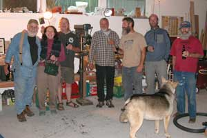
8 Aug 2007: Matt's Shop. Project productivity is inversely proportional to the number of people, unless there are only a few people, then it is proportional, with anything in between not very productive.
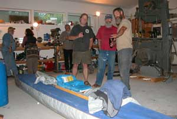
Work on the Klepper was planned and discussed.
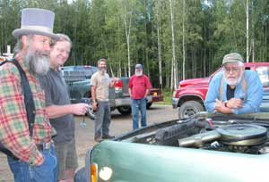
The 73 jeep engine was diagnosed.
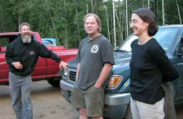
The doctor verified the diagnosis.
Projects were assigned for next project night. Expect spectacular results.
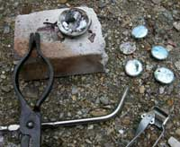
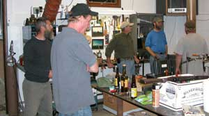
1 Aug 2007: Tim's Shop
Actual projects were advanced between the discussion of the stainless steel stove pipe, the design of the stove, and more worldly concepts including the local brewery production.
Scrap jewelry silver accumulating from years of scant jewelry projects got melted into handy pellets.
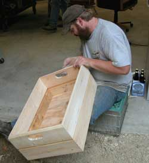
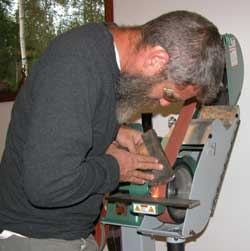
Record must reflect the magnificently presented brick retaining wall advanced beside the shop. The camera guy did not get the brick photo. Next time.
That is the wooden garden vegetable box to carry fresh vegetables from the garden. A husband's work is never done.
The sharp axe is to keep with the chain saw, for those embarrassing miscalculations on the lean of the tree, when the pinched chain saw must be chopped back out of the tree.
The report from Juneau has it that Mischief will shortly be sailing for the outer coast, laden with fine wine for fresh fish and a fun time to be had at a Secret Bay inhabited by yet another previous Fairbanks sort. The sailing itinerary includes a trip north for some geological research in the famous and dicey Lituya Bay. Expect a full report upon the return of the boat captain and her science engineer.
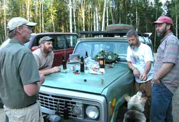
18 July: Matt's Shop
Major Project: Discussion of the weather. Really nice.
Alaska gold mining projects were also discussed. They are again increasing this year. With more efficient transfer of international knowledge (internet), more people are recognizing the US Dollar as the most overprinted paper script in human history. With the equally greedy Chinese and Euro governments trying to copy the US formula of creating prosperity for government people, by overprinting worthless paper money, the percentage of increasingly informed people trading paper for gold indicates that the illusion of perceived value in government-printed script may finally collapse and never recover. When that inherently happens, it will happen fast.
The dog just wanted some of the locally smoked salmon and brie.
The Caol Ila 18 year old Scotch, Gamel Dansk and Silver Gulch local ale inflated the value of the gold nobody could afford because they traded dollars for alcohol.
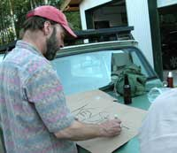
Second project: A cardboard sign was made, properly designed and constructed, in metric, environmentally neutral colors.
Third project: Precision auto body work on a 1973 Jeep Commando. Rust neutralizer was applied to the rusted wheel well. Obviously matching green plastic tape covered the gap so nobody would notice it, as you notice, and to enhance the strength of the body. Jeep Commandos were made by American Motors Corporation while it owned the Jeep brand. In addition to the remarkably poor workmanship of its products, it was later recognized that the reason American Motors went out of business was the number of retired government officials it hired. They perceived that the quality of cars was increased by their high salaries paid for sitting around giving the workers permission to do what they could do without the permission. That is what the pitiable government chaps are trained to do for their lavish salaries.
Alaskan, Chinese and Russian gold is of the same value. Their paper money holds the same lack of value. Wisely consider being among the internet informed percentage of the population. We Alaskans benefit from the labor jobs at the mines, so we can afford more plastic tape to keep the precision machinery running.
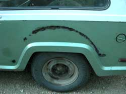
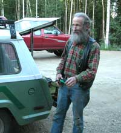
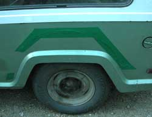
The Juneau Project Night Report included rumors of tree house planning. A request for photos of the tree and plans was dispatched on the south bound ferry. We may have to take a photo of a local tree, and apply photoshop steroids. The plans may take longer.
11 July: Matt's Shop
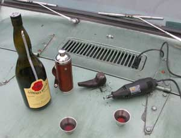
First off, progress was made on a photo of the Lignitized Pipe Project, as is evident. The electricity outlet was not producing full wattage, but the Gamel Dansk was.
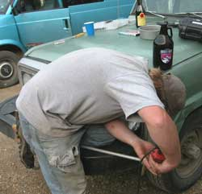
The dog food dipping pan was the project success of the evening.
When one of the project engineers attending the evening's seminar on dog food dipping pan construction techniques, was admiring the handle, Duff mentioned: "I found it in the pile of many things."
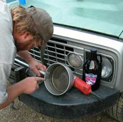
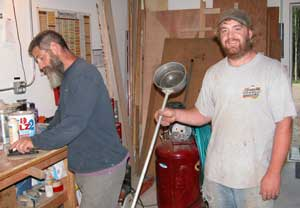
And there we jolly well have it.
There were some comments about certain ongoing project failures being moronically pursued to their maximum destructive testing extent for the most repeated repetition of history, directed from the Office of Miserable Failure in Washington DC. In fact, there were so many such comments that some of the evening's projects will be started next Project Night.
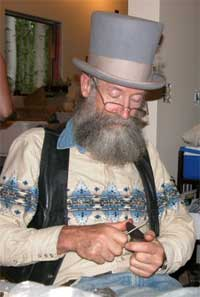
4 July 2007: While our great nation's productivity was diminished by the masses attending all manner of frivolous pursuits on the 4th of July, polluting the atmosphere with pyrotechnic carbon particulate matter, providing cover for terrorist bomb development pursuits, we of the prestigious ProjectNight.net team were diligently doing what we diligently do, at Duff's Shop. You will notice that the lignitized wood pipes are progressing on schedule. Yes those are the same three pipes of previous Project Nights. Fine workmanship and endless yakking about projects cannot be rushed.
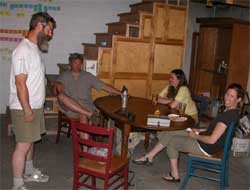
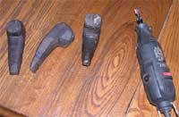
Noticing from the sounds of things that we would not be bothering the neighbors, and in fact thought unpatriotic if we did not make some sort of explosions, we set about the long-discussed project of testing the number of Gamel Dansk bottles a common 30/30 rifle bullet would penetrate.
Five.
On each of several tests, until the last of many empty Gamel Dansk bottles where therefore made more environmentally re-assimilatable, the results verified the results. Five. ProjectNight.net routinely advances the nation's data base of valuable knowledge. We did not unlimber the 375 H&H Magnum. Not enough bottles. We did unlimber another bottle of Gamel Dansk. As every government funded scientist states, further testing will be required.
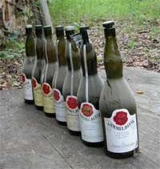
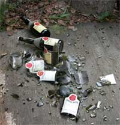
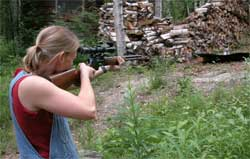
Page 4 October 07 ---- December
07
Page 5 December 07 -- February
08
Page 6 February 08 --- March 08
Page 7 March 08 ------ October
08
Page 8 October 08 ---- January
09
Page 9 February 09 --- November
09
Page 10 November 09 - Present
Page 2 April 07 -------- June
07
Page 1 November 06 -- March 07